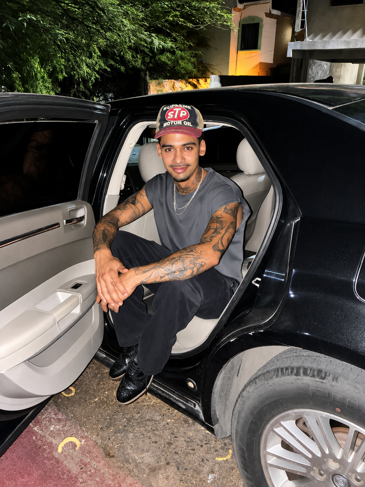

Artista · Biografía
Ismael
Corrales.
Pintar es una forma de observar aquello que normalmente permanece oculto.
Ismael Corrales es un artista visual autodidacta cuya práctica se desarrolla principalmente a través de la pintura acrílica sobre lienzo.

Biografía
Una práctica construida desde la observación.
Ismael Corrales comenzó a pintar en 2020 de manera autodidacta. Su acercamiento inicial a la pintura surgió a través de la acuarela y el retrato, desarrollándose posteriormente hacia el acrílico sobre lienzo.
Su trabajo parte de la observación de personas, objetos y situaciones de la vida cotidiana. A través de la pintura, estas escenas se transforman en imágenes que exploran experiencias personales, emociones y aspectos de la condición humana.
La luz, el contraste y la construcción de atmósferas ocupan un lugar central dentro de su lenguaje visual. Su práctica mantiene una relación constante con el claroscuro y con distintas tradiciones de la pintura figurativa.
Corrales continúa desarrollando un archivo de obra que funciona como registro de su evolución artística y de su manera de interpretar el entorno.
Información